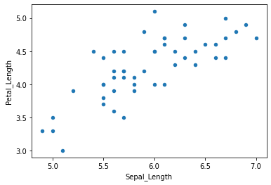
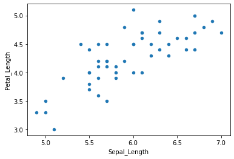

Introduction to Pandas¶
Pandas is a library that is useful for working with different types of datasets. A dataframe is a pandas object that has a variety of function to analyze and visualize data.
import pandas as pd
print(pd.__version__)
1.3.4
Creating a dataframe from a dictionary where keys become headers and values (list) are entries in the dataframe. The orientation of the dataframe by default is columns ie keys are considered as column header and values are rows. This behaviour can be changed using the orient argument. When orientation is index, an addtional argument columns can be used to specify column headers.
from IPython.display import display_html
from IPython.display import display, Latex
input_dict = {'Column1': ['A','B','C','D','E'], 'Column2':[1,2,3,4,5]}
df1 = pd.DataFrame.from_dict(input_dict)
df2 = pd.DataFrame.from_dict(input_dict, orient='index', columns=['Val1','Val2','Val3','Val4','Val5',])
print(input_dict)
{'Column1': ['A', 'B', 'C', 'D', 'E'], 'Column2': [1, 2, 3, 4, 5]}
Getting basic information about the dataframe¶
Pandas offers set of commands to get some basic information about the content of dataframes. Below are some of these command along with their corresponding output.
display(df1)
print("**Different commands to get some basic information about this dataframe**")
display(Latex(f'df1.shape $\Longrightarrow$ {df1.shape}'))
display(Latex(f'df1.size $\Longrightarrow$ {df1.size}'))
display(Latex(f'df1.ndim $\Longrightarrow$ {df1.ndim}'))
display(Latex(f'df1.axes $\Longrightarrow$ {df1.axes}'))
display(Latex(f'df1.values $\Longrightarrow$ {df1.values}'))
| Column1 | Column2 | |
|---|---|---|
| 0 | A | 1 |
| 1 | B | 2 |
| 2 | C | 3 |
| 3 | D | 4 |
| 4 | E | 5 |
**Different commands to get some basic information about this dataframe**
df1_styler = df1.style.set_table_attributes("style='display:inline;margin-right:10em'").set_caption('df1').set_table_styles([{
'selector': 'caption',
'props': [
('text-align', 'center'),
('font-size', '14pt')
]
}])
df2_styler = df2.style.set_table_attributes("style='display:inline'").set_caption('df2').set_table_styles([{
'selector': 'caption',
'props': [
('text-align', 'center'),
('font-size', '14pt')
]
}])
display_html(df1_styler._repr_html_()+df2_styler._repr_html_(), raw=True)
| Column1 | Column2 | |
|---|---|---|
| 0 | A | 1 |
| 1 | B | 2 |
| 2 | C | 3 |
| 3 | D | 4 |
| 4 | E | 5 |
| Val1 | Val2 | Val3 | Val4 | Val5 | |
|---|---|---|---|---|---|
| Column1 | A | B | C | D | E |
| Column2 | 1 | 2 | 3 | 4 | 5 |
Read data from a csv file¶
The read_csv() function can be used to create a dataframe from a csv file. To use one of the columns as indices for the dataframe add the index_col keyword attribute.
# %load test.csv
Name,Age,Country
Sohan,22,India
Sam,21,USA
df3 = pd.read_csv("test.csv")
df4 = pd.read_csv("test.csv", index_col="Country")
df3_styler = df3.style.set_table_attributes("style='display:inline;margin-right:10em'").set_caption('df3').set_table_styles([{
'selector': 'caption',
'props': [
('text-align', 'center'),
('font-size', '14pt')
]
}])
df4_styler = df4.style.set_table_attributes("style='display:inline'").set_caption('df4').set_table_styles([{
'selector': 'caption',
'props': [
('text-align', 'center'),
('font-size', '14pt')
]
}])
display_html(df3_styler._repr_html_()+df4_styler._repr_html_(), raw=True)
| Name | Age | Country | |
|---|---|---|---|
| 0 | Sohan | 22 | India |
| 1 | Sam | 21 | USA |
| Name | Age | |
|---|---|---|
| Country | ||
| India | Sohan | 22 |
| USA | Sam | 21 |
Combining dataframes - join, merge, and concat¶
Concat is used to combine dataframes across rows or columns. Merge is used to combine dataframes on common columns or indices. Join is used to combine based on a key column or index.
import numpy as np
df_1 = pd.DataFrame(np.random.uniform(1,2,size=(5, 4)), columns=list('ABCD'))
df_2 = pd.DataFrame(np.random.uniform(2,3,size=(5, 4)), columns=list('ABCD'))
df_1_styler = df_1.style.set_table_attributes("style='display:inline;margin-right:10em'").set_caption('df_1').set_table_styles([{
'selector': 'caption',
'props': [
('text-align', 'center'),
('font-size', '14pt')
]
}])
df_2_styler = df_2.style.set_table_attributes("style='display:inline'").set_caption('df_2').set_table_styles([{
'selector': 'caption',
'props': [
('text-align', 'center'),
('font-size', '14pt')
]
}])
display_html(df_1_styler._repr_html_()+df_2_styler._repr_html_(), raw=True)
| A | B | C | D | |
|---|---|---|---|---|
| 0 | 1.892376 | 1.141373 | 1.731113 | 1.448476 |
| 1 | 1.642757 | 1.586995 | 1.685160 | 1.312302 |
| 2 | 1.101157 | 1.685738 | 1.122018 | 1.155299 |
| 3 | 1.800428 | 1.405369 | 1.022929 | 1.176455 |
| 4 | 1.707171 | 1.496218 | 1.541431 | 1.722533 |
| A | B | C | D | |
|---|---|---|---|---|
| 0 | 2.895683 | 2.432215 | 2.823270 | 2.304230 |
| 1 | 2.644460 | 2.632770 | 2.344918 | 2.492367 |
| 2 | 2.333119 | 2.523287 | 2.993205 | 2.737581 |
| 3 | 2.612822 | 2.742458 | 2.113048 | 2.453202 |
| 4 | 2.977467 | 2.265983 | 2.995159 | 2.821227 |
df_new = pd.concat([df_1,df_2])#,ignore_index=True)
df_new
| A | B | C | D | |
|---|---|---|---|---|
| 0 | 1.892376 | 1.141373 | 1.731113 | 1.448476 |
| 1 | 1.642757 | 1.586995 | 1.685160 | 1.312302 |
| 2 | 1.101157 | 1.685738 | 1.122018 | 1.155299 |
| 3 | 1.800428 | 1.405369 | 1.022929 | 1.176455 |
| 4 | 1.707171 | 1.496218 | 1.541431 | 1.722533 |
| 0 | 2.895683 | 2.432215 | 2.823270 | 2.304230 |
| 1 | 2.644460 | 2.632770 | 2.344918 | 2.492367 |
| 2 | 2.333119 | 2.523287 | 2.993205 | 2.737581 |
| 3 | 2.612822 | 2.742458 | 2.113048 | 2.453202 |
| 4 | 2.977467 | 2.265983 | 2.995159 | 2.821227 |
df_new = pd.concat([df_1,df_2],axis=1)
df_new
| A | B | C | D | A | B | C | D | |
|---|---|---|---|---|---|---|---|---|
| 0 | 1.892376 | 1.141373 | 1.731113 | 1.448476 | 2.895683 | 2.432215 | 2.823270 | 2.304230 |
| 1 | 1.642757 | 1.586995 | 1.685160 | 1.312302 | 2.644460 | 2.632770 | 2.344918 | 2.492367 |
| 2 | 1.101157 | 1.685738 | 1.122018 | 1.155299 | 2.333119 | 2.523287 | 2.993205 | 2.737581 |
| 3 | 1.800428 | 1.405369 | 1.022929 | 1.176455 | 2.612822 | 2.742458 | 2.113048 | 2.453202 |
| 4 | 1.707171 | 1.496218 | 1.541431 | 1.722533 | 2.977467 | 2.265983 | 2.995159 | 2.821227 |
df_new = pd.concat([df_1,df_2],keys=["df_1","df_2"])
df_new
| A | B | C | D | ||
|---|---|---|---|---|---|
| df_1 | 0 | 1.892376 | 1.141373 | 1.731113 | 1.448476 |
| 1 | 1.642757 | 1.586995 | 1.685160 | 1.312302 | |
| 2 | 1.101157 | 1.685738 | 1.122018 | 1.155299 | |
| 3 | 1.800428 | 1.405369 | 1.022929 | 1.176455 | |
| 4 | 1.707171 | 1.496218 | 1.541431 | 1.722533 | |
| df_2 | 0 | 2.895683 | 2.432215 | 2.823270 | 2.304230 |
| 1 | 2.644460 | 2.632770 | 2.344918 | 2.492367 | |
| 2 | 2.333119 | 2.523287 | 2.993205 | 2.737581 | |
| 3 | 2.612822 | 2.742458 | 2.113048 | 2.453202 | |
| 4 | 2.977467 | 2.265983 | 2.995159 | 2.821227 |
df_new.loc["df_2"]
| A | B | C | D | |
|---|---|---|---|---|
| 0 | 2.895683 | 2.432215 | 2.823270 | 2.304230 |
| 1 | 2.644460 | 2.632770 | 2.344918 | 2.492367 |
| 2 | 2.333119 | 2.523287 | 2.993205 | 2.737581 |
| 3 | 2.612822 | 2.742458 | 2.113048 | 2.453202 |
| 4 | 2.977467 | 2.265983 | 2.995159 | 2.821227 |
Merge is used combine dataframe on one or more columns
df3 = pd.read_csv("test.csv")
display(df3)
df4 = df3.copy(deep=True)
df4.loc[2]=["Peter", 20, "UK"]
df4.loc[len(df4.index)] = ["Mohan", 25, "India"]
display(df4)
df_merged1 = pd.merge(df3,df4)
display(df_merged1)
df_merged2 = pd.merge(df3,df4,on=["Country","Name"],suffixes=('_df3', '_df4'))
display(df_merged2)
| Name | Age | Country | |
|---|---|---|---|
| 0 | Sohan | 22 | India |
| 1 | Sam | 21 | USA |
| Name | Age | Country | |
|---|---|---|---|
| 0 | Sohan | 22 | India |
| 1 | Sam | 21 | USA |
| 2 | Peter | 20 | UK |
| 3 | Mohan | 25 | India |
| Name | Age | Country | |
|---|---|---|---|
| 0 | Sohan | 22 | India |
| 1 | Sam | 21 | USA |
| Name | Age_df3 | Country | Age_df4 | |
|---|---|---|---|---|
| 0 | Sohan | 22 | India | 22 |
| 1 | Sam | 21 | USA | 21 |
Join is used to combine dataframes along a specific column.
df3.join(df4,lsuffix='_df3', rsuffix='_df4')
| Name_df3 | Age_df3 | Country_df3 | Name_df4 | Age_df4 | Country_df4 | |
|---|---|---|---|---|---|---|
| 0 | Sohan | 22 | India | Sohan | 22 | India |
| 1 | Sam | 21 | USA | Sam | 21 | USA |
df3
| Name | Age | Country | |
|---|---|---|---|
| 0 | Sohan | 22 | India |
| 1 | Sam | 21 | USA |
df3.join(df4.set_index("Country"),on="Country", lsuffix='_df3', rsuffix='_df4')
| Name_df3 | Age_df3 | Country | Name_df4 | Age_df4 | |
|---|---|---|---|---|---|
| 0 | Sohan | 22 | India | Sohan | 22 |
| 0 | Sohan | 22 | India | Mohan | 25 |
| 1 | Sam | 21 | USA | Sam | 21 |
df3.join(df4.set_index("Country"),on="Country", lsuffix='_df3', rsuffix='_df4', how="outer")
| Name_df3 | Age_df3 | Country | Name_df4 | Age_df4 | |
|---|---|---|---|---|---|
| 0.0 | Sohan | 22.0 | India | Sohan | 22 |
| 0.0 | Sohan | 22.0 | India | Mohan | 25 |
| 1.0 | Sam | 21.0 | USA | Sam | 21 |
| NaN | NaN | NaN | UK | Peter | 20 |
Groupby¶
We can create groups for same values in a column to apply a function to all rows having a particular value.
students = [["Sam","Peter","Mohan", "Mike"], ["UG","PG","UG","PG"], [70,80,90,70]]
df_students = pd.DataFrame(students).T
df_students.columns=["Name","Program","Marks"]
df_students
| Name | Program | Marks | |
|---|---|---|---|
| 0 | Sam | UG | 70 |
| 1 | Peter | PG | 80 |
| 2 | Mohan | UG | 90 |
| 3 | Mike | PG | 70 |
df_students.set_index("Program", inplace=True)
display(df_students)
| Name | Marks | |
|---|---|---|
| Program | ||
| UG | Sam | 70 |
| PG | Peter | 80 |
| UG | Mohan | 90 |
| PG | Mike | 70 |
df_students.groupby(level="Program")["Marks"].mean()
Program
PG 75.0
UG 80.0
Name: Marks, dtype: float64
Ploting¶
Dataframe has a plot() function to do basic visualization. The kind attribute for this function can be used to change the plot type.
df_col1 = pd.DataFrame(np.array(range(1,6))**2)
df_col2 = pd.DataFrame(np.array(range(1,6))**3)
df_comb = pd.concat([df_col1,df_col2], axis=1, ignore_index=True)
df_comb.columns = ["Squares", "Cubes"]
df_comb.index = range(1,6)
df_comb
| Squares | Cubes | |
|---|---|---|
| 1 | 1 | 1 |
| 2 | 4 | 8 |
| 3 | 9 | 27 |
| 4 | 16 | 64 |
| 5 | 25 | 125 |
df_comb.plot()
df_comb.plot(kind="bar")
<AxesSubplot:>


The iris dataset¶
csv_url = 'https://archive.ics.uci.edu/ml/machine-learning-databases/iris/iris.data'
# using the attribute information as the column names
col_names = ['Sepal_Length','Sepal_Width','Petal_Length','Petal_Width','Class']
iris = pd.read_csv(csv_url, names = col_names)
iris
| Sepal_Length | Sepal_Width | Petal_Length | Petal_Width | Class | |
|---|---|---|---|---|---|
| 0 | 5.1 | 3.5 | 1.4 | 0.2 | Iris-setosa |
| 1 | 4.9 | 3.0 | 1.4 | 0.2 | Iris-setosa |
| 2 | 4.7 | 3.2 | 1.3 | 0.2 | Iris-setosa |
| 3 | 4.6 | 3.1 | 1.5 | 0.2 | Iris-setosa |
| 4 | 5.0 | 3.6 | 1.4 | 0.2 | Iris-setosa |
| ... | ... | ... | ... | ... | ... |
| 145 | 6.7 | 3.0 | 5.2 | 2.3 | Iris-virginica |
| 146 | 6.3 | 2.5 | 5.0 | 1.9 | Iris-virginica |
| 147 | 6.5 | 3.0 | 5.2 | 2.0 | Iris-virginica |
| 148 | 6.2 | 3.4 | 5.4 | 2.3 | Iris-virginica |
| 149 | 5.9 | 3.0 | 5.1 | 1.8 | Iris-virginica |
150 rows × 5 columns
print("Shape", iris.shape)
print(iris.dtypes)
Shape (150, 5)
Sepal_Length float64
Sepal_Width float64
Petal_Length float64
Petal_Width float64
Class object
dtype: object
iris.describe()
| Sepal_Length | Sepal_Width | Petal_Length | Petal_Width | |
|---|---|---|---|---|
| count | 150.000000 | 150.000000 | 150.000000 | 150.000000 |
| mean | 5.843333 | 3.054000 | 3.758667 | 1.198667 |
| std | 0.828066 | 0.433594 | 1.764420 | 0.763161 |
| min | 4.300000 | 2.000000 | 1.000000 | 0.100000 |
| 25% | 5.100000 | 2.800000 | 1.600000 | 0.300000 |
| 50% | 5.800000 | 3.000000 | 4.350000 | 1.300000 |
| 75% | 6.400000 | 3.300000 | 5.100000 | 1.800000 |
| max | 7.900000 | 4.400000 | 6.900000 | 2.500000 |
iris.set_index("Class").groupby(level="Class").describe()
| Sepal_Length | Sepal_Width | ... | Petal_Length | Petal_Width | |||||||||||||||||
|---|---|---|---|---|---|---|---|---|---|---|---|---|---|---|---|---|---|---|---|---|---|
| count | mean | std | min | 25% | 50% | 75% | max | count | mean | ... | 75% | max | count | mean | std | min | 25% | 50% | 75% | max | |
| Class | |||||||||||||||||||||
| Iris-setosa | 50.0 | 5.006 | 0.352490 | 4.3 | 4.800 | 5.0 | 5.2 | 5.8 | 50.0 | 3.418 | ... | 1.575 | 1.9 | 50.0 | 0.244 | 0.107210 | 0.1 | 0.2 | 0.2 | 0.3 | 0.6 |
| Iris-versicolor | 50.0 | 5.936 | 0.516171 | 4.9 | 5.600 | 5.9 | 6.3 | 7.0 | 50.0 | 2.770 | ... | 4.600 | 5.1 | 50.0 | 1.326 | 0.197753 | 1.0 | 1.2 | 1.3 | 1.5 | 1.8 |
| Iris-virginica | 50.0 | 6.588 | 0.635880 | 4.9 | 6.225 | 6.5 | 6.9 | 7.9 | 50.0 | 2.974 | ... | 5.875 | 6.9 | 50.0 | 2.026 | 0.274650 | 1.4 | 1.8 | 2.0 | 2.3 | 2.5 |
3 rows × 32 columns
iris.plot.scatter(x="Sepal_Length",y="Sepal_Width")
<AxesSubplot:xlabel='Sepal_Length', ylabel='Sepal_Width'>

import matplotlib.pyplot as plt
import seaborn as sns
iris.set_index("Class").groupby(level="Class").plot.scatter(x="Sepal_Length",y="Petal_Length")
Class
Iris-setosa AxesSubplot(0.125,0.125;0.775x0.755)
Iris-versicolor AxesSubplot(0.125,0.125;0.775x0.755)
Iris-virginica AxesSubplot(0.125,0.125;0.775x0.755)
dtype: object
 


sns.jointplot(data=iris,x="Sepal_Length",y="Petal_Length",hue="Class")
<seaborn.axisgrid.JointGrid at 0x11e7de880>